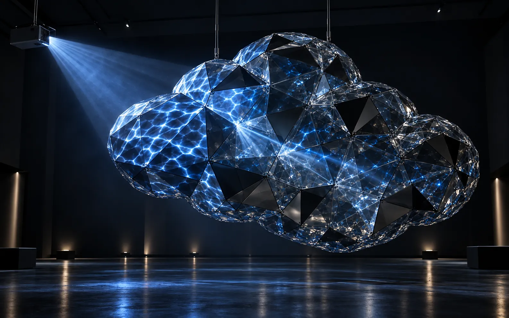

О проекте
«Облако» — размышление о том, как сделать невесомый материал — свет — ощутимым и почти телесным, сохранив ощущение лёгкости.
Объект не изображает облако буквально. Его объём возникает из прозрачной оболочки, бликов и светового маршрута внутри: зритель видит не массивную форму, а свет, который на мгновение собирает её из воздуха.
Интерактивная 3D-модельКонструкция
Конструкция
и свет
Зажмите модель мышью или пальцем и поверните её. Серебряные треугольники обозначают зеркальные поверхности, прозрачные — стеклянную оболочку.
Инсталляция собрана как лёгкий пространственный каркас из повторяющихся треугольных модулей. Часть модулей получает зеркальное покрытие, остальные остаются прозрачными и сохраняют визуальную проницаемость объекта.
- Каркас
- Жёсткая алюминиевая сетка удерживает геометрию и позволяет заменять отдельные панели без разборки всего объёма.
- Оптический маршрут
- Лазер входит через прозрачную грань. Зеркальные панели разворачивают его внутри объекта; грани вне маршрута остаются стеклянными.
- Наружный слой
- Проектор работает по внешней оболочке: изображение дробится по граням, а часть света проходит внутрь и проявляет глубину.
- Настройка
- Углы зеркал и положение источника юстируются на прототипе. При смещении прибора меняется последовательность отражений, поэтому маршрут пересчитывается и настраивается заново.
Зажмите и вращайте модель
Загрузка модели…